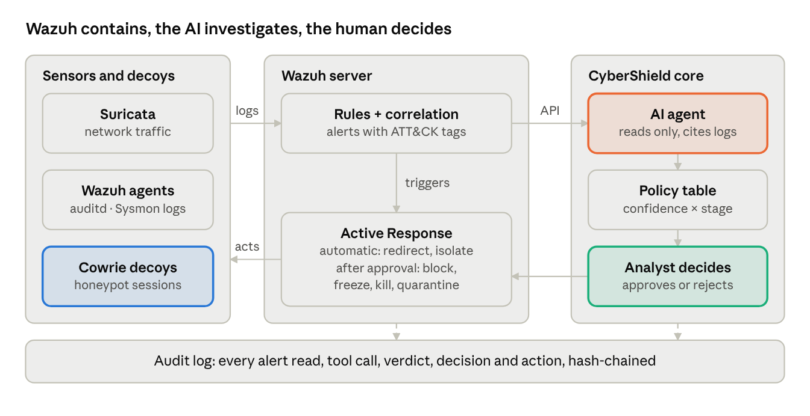

Agentic cyber defence with human oversight · HackAI 2026, Track 01 Agentic Cyber Defence · In one line: Wazuh contains, the AI investigates, the human decides.
Security teams receive more alerts than they can investigate, many of them false positives, so real attacks get missed. Three gaps make this worse:
Target user: a Tier 1 analyst in a 24/7 managed security operations centre (SOC) that protects small and mid-sized organisations, who must decide quickly and defensibly.
CyberShield is one pipeline built on open-source tools (Wazuh, Suricata, Cowrie). Each attack type plugs in as a playbook: a sensor, a detection rule and a containment action. Containment is automatic only when it is reversible, time-limited and changes no data.

Evidence flows left to right; only approved actions flow back. The eight stages are the same for every attack type: 1 Sense (Suricata eve.json, Wazuh agents with auditd or Sysmon, Cowrie cowrie.json) → 2 Detect (Wazuh rules, including custom Cowrie rules, mapped to MITRE ATT&CK) → 3 Contain (automatic and reversible) → 4 Investigate (the AI agent, through the Wazuh API) → 5 Decide (policy table, then the analyst) → 6 Respond (Wazuh runs the approved action) → 7 Record (hash-chained audit log) → 8 Learn (rejections reviewed by a person, who tunes rules and thresholds).
The agent (Claude, or a local model via Ollama when logs must stay on-site) works in a loop: it picks a tool, reads the result and decides what to check next. It runs when an incident opens and again when new evidence arrives, with model calls capped per incident. Its tools are search_alerts, get_honeypot_session, check_ip_reputation and map_to_attack (maps honeypot commands, which carry no ATT&CK tags, to techniques), all read-only, plus propose_action, which can only propose.
Its choices matter where fixed rules stop. After a download attempt in the honeypot, it pulls Suricata's record of that connection. When a username matches a real account, it checks that account's other logins. When a session looks harmless, it looks up what triggered the redirect, to support a release.
The output is one incident report: a timeline, MITRE ATT&CK techniques, confidence (low, medium or high) and stage (Probing, Trying to get in, Inside). Every claim cites a log line, and each citation is checked automatically to exist.
The AI never picks the action: a fixed table maps its two ratings to a recommendation, which the analyst approves or rejects on an approval screen. Only the redirect and process isolation run without an analyst; while a decision is pending they are held up to a hard cap, then escalated as overdue.
| Confidence | Probing (scans only) | Trying to get in (login attempts, incl. redirected) | Inside (real foothold, process isolated) |
|---|---|---|---|
| Low | Log only | Lift the redirect (approval) | Lift the isolation (approval) |
| Medium | Watch list; redirect sooner | Keep in honeypot, alert analyst | Keep isolated; disable account (approval) |
| High | Timed block (approval) | Timed block (approval) | Freeze or kill, quarantine, disable account (approval) |
Rules, not the AI, set floors under the ratings: a download attempt means at least medium, touching a standalone decoy means high, and a real login means Inside. On a critical asset, confidence counts one level higher. Allowlisted IPs and critical services are never contained automatically, and a conservative mode turns automatic containment off.
Finals demo (Phase 1, 7 Nov): the SSH brute-force playbook end to end plus Linux process isolation after a break-in, with the agent, approval screen and audit log. It runs on one laptop (32 GB RAM, RTX 5070) in VirtualBox: a Wazuh server, a victim (real SSH, Cowrie, Suricata, auditd) and a Kali attacker. Later phases add web, DoS, malware, privilege-escalation and lateral-movement playbooks, and Windows endpoints.
Baseline and metrics: we compare against Wazuh alone, counting both per incident (one attacker source in a 30-minute window). CyberShield sees only what Wazuh alerts on, so the target is the same recall with higher precision and fewer analyst decisions. We also measure evidence accuracy, time from trigger to containment, whether isolated processes can still reach the network, injection resistance, and cost and latency for Claude versus a local model.
Data: scripted lab attacks with a ground-truth log, a benign-activity script, CIC-IDS2017 Monday and Tuesday traffic replayed through Suricata (network detection only), and injection attempts typed inside Cowrie. Seven scenarios, each attack repeated at least 10 times: a full brute force; benign activity only; one attack hidden in noise; prompt injection; a non-allowlisted user's typo; a break-in with a guessed or stolen password; and a genuine user wrongly redirected.
Closest prior work, Wazuh-Autopilot, runs AI agents on Wazuh with approvals; CyberShield adds deception first, honeypot behaviour as evidence, process containment and a measured Wazuh-only baseline.